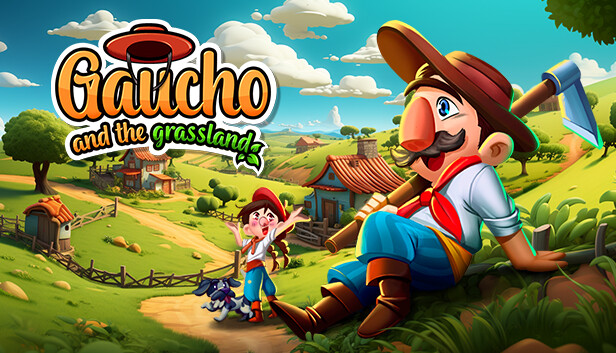

Meu nome é Carlos Natan Sluzala, tenho 19 anos e moro em Irati, no estado do Paraná. Uma das minhas grandes paixões é a cultura do Sul: gosto de ouvir músicas gaúchas e, inclusive, um dos meus hobbies é tocar gaita, que também é conhecida como acordeon ou sanfona em outras regiões do Brasil. Porém, como sou um tanto eclético, aprecio outros gêneros também, como o rock e o black metal, que são perfeitos para dar aquele gás extra na hora de puxar ferro na academia.
Imagem que representa uma junção de varios Hobbies meus, um jogo baseado na cultura Gaucha, criado totalmente por Brasileiros, valorizando a cultura e inclusive o folclóre do sul e de todo o Brasil.
| Nomenclatura | Bandeira |
|---|---|
| Chile | |
| Portugal | |
| Suiça |
Como site de meu interesse, escolhi o minigame online chamado "Contexto", onde diariamente os visitantes tem de adivinhar uma palavra aleatória seguindo o contexto de seus próprios palpítes, conforme a resposta pré definida.
Site Contexto